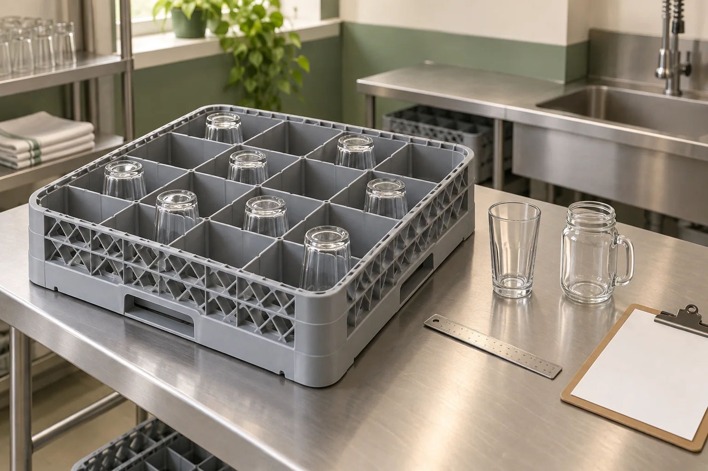
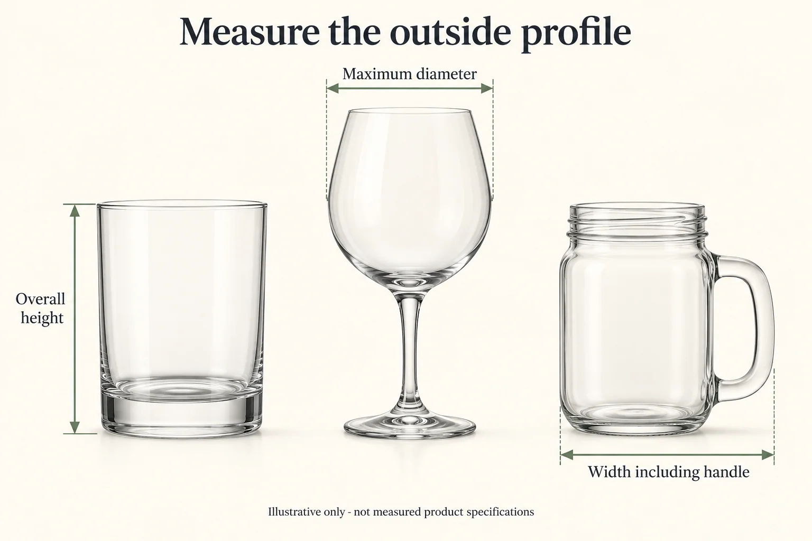
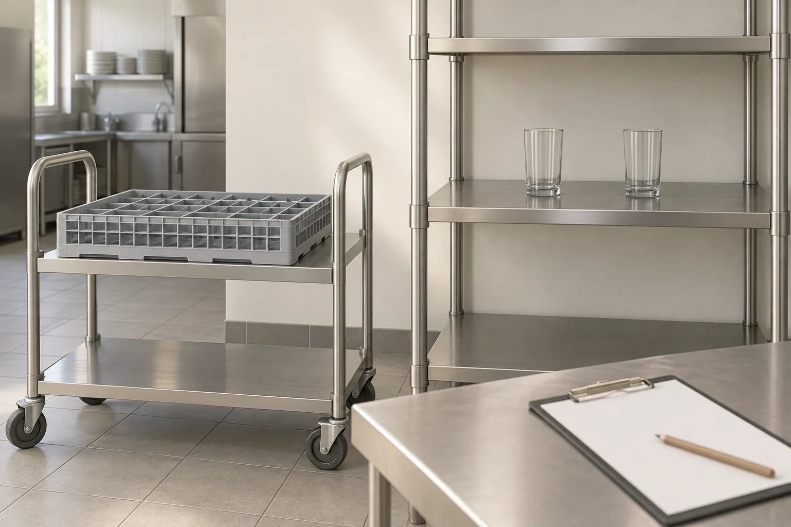

Restaurant Glassware: Dishwasher Rack Fit & Storage Checklist

AI-generated editorial illustration; not product photography or a completed fit test.A glass can suit the drinks menu and still be awkward to wash, carry or store. Before placing a restaurant glassware order, check the selected glass with the actual rack, machine opening and storage arrangement. Capacity alone does not describe that fit.
Start with the Restaurant & Bar Glassware guide for the wider buying brief. This checklist focuses on equipment fit and sample records. Fitting inside a rack does not establish that the glass or its decoration is suitable for commercial dishwashing; confirm those use conditions separately for the exact finished item.
1. Record the equipment you already use
Ask the operating team for the dishwasher make and model, the rack reference, its compartment arrangement and any fitted extenders. Record the available opening and handling clearances from the equipment documentation. A description such as “standard rack” is not specific enough to approve a purchase.
Photograph the empty rack, its identification marks and the intended storage position. If different locations use different equipment, keep a separate record for each site rather than assuming that approval in one restaurant covers the whole group.
2. Measure the whole glass profile
Record the product reference and measurements with units. Note whether each value comes from the supplier's drawing or a physical sample; do not quietly treat a catalog value as a measured result.
- Overall height in the intended loading orientation.
- Largest outside diameter, including a wider bowl, rim or base.
- Overall width including handles or other projections.
- Base shape and the points that contact the rack.
- Empty weight, where it matters to handling the loaded rack.
- Finish or decoration, together with the applicable care instructions.
For a stemmed glass, the widest part may be the bowl or foot. For a handled drinking jar, the handle may govern the required space. A rim diameter and nominal capacity leave both questions unanswered. Use the glassware specification-sheet guide when the supplier's units or dimension definitions need clarification.

AI-generated dimensional illustration: check overall height, maximum outside diameter and width including the handle. No measured product specifications are shown.3. Compare the sample with the exact rack configuration
Rack manufacturers publish limits for their own configurations. For example, Cambro's full-size glass-rack specifications distinguish rack models and glass-height limits. Consult the documentation for the rack you actually use; one manufacturer's chart does not establish compatibility with another rack or with every glass shape.
Check both the compartment and the complete loaded assembly. Use the manufacturer's stated limits and loading instructions, then confirm fit with a sample. Do not invent a universal extra-clearance allowance or approve an item merely because its nominal dimensions sit just below a published limit.
During the fit check, record whether the glass can be inserted and removed without forcing it, which surfaces touch the rack and whether the intended arrangement creates contact between adjacent glasses. Check handles, stems, projecting rims and the full height of the assembled rack. Refer uncertain configurations to the equipment or rack supplier.
4. Keep washing suitability separate from dimensional fit
Obtain written care guidance for the finished glass, including printing, coating or metallic decoration. A supplier's statement about a plain glass body may not cover a decorated version. Likewise, a rack's temperature rating is not a temperature rating for the glass placed inside it.
Only plan a wash evaluation after the glass supplier's instructions and the machine requirements have been reconciled. Agree the equipment, loading arrangement, operating conditions and observations with the responsible team. Record what was actually evaluated. A successful short trial is not a promise of an unlimited service life or a guaranteed number of wash cycles.
Keep the washing record separate from the fit record so that an unresolved care question does not become an accidental approval.
5. Check carrying and storage as part of the same workflow
Follow the route from unloading to the shelf and service area. Check the loaded rack against the available shelf height, trolley, access route and the handling procedure used by staff. Assess the proposed arrangement with the operating team rather than choosing a storage quantity from a photograph.
Do not assume that glasses can be nested or stacked because their shapes look compatible. Request model-specific confirmation and review the intended arrangement with samples. Record any limits provided by the supplier. For a handled jar, also consider how the handle affects tray spacing and removal from the shelf; the Mason Jar drinking-glass guide covers the broader component and packing brief.

AI-generated storage-planning illustration: review shelf height, trolley access and the documented arrangement. This is not an approved storage layout or product test.6. Keep a short approval record
Use one record for each glass-and-equipment combination:
- Glass: product reference, finish, sample identifier and drawing revision.
- Dimensions: overall height, maximum width or diameter and handle projection, with units and measurement source.
- Equipment: machine model, rack reference, compartments and extenders.
- Fit: loading orientation, contact points and insertion/removal observations.
- Care: finished-item instructions and unresolved restrictions.
- Evaluation: agreed method, date, responsible reviewer and photographs.
- Storage: shelf or trolley reference, arrangement and any confirmed stacking limits.
- Decision: approved for the documented use, revision required, or information still needed.
Keep unknown fields marked “not confirmed.” Link the record to the retained sample so that a future change in dimensions, decoration or rack configuration can trigger a fresh review.
7. Request a shortlist that matches the service setup
Begin with a small selection from the glass tumbler collection or the Mason Jar drinking-glass collection. Send the product references, intended drinks, quantities and equipment information through the inquiry option on the relevant product page.
Ask for confirmed dimensions, finished-item care guidance and samples for the proposed fit checks. State the rack and storage constraints explicitly. This gives the supplier a defined comparison problem instead of a general request for glasses that “fit a restaurant.”
Frequently asked questions
Can I select a rack from the glass capacity?
No. Capacity describes an internal volume or a supplier convention. Rack selection requires the relevant outside dimensions, profile and the rack manufacturer's limits.
Does fitting in the rack mean the glass is dishwasher-safe?
No. Dimensional fit and washing suitability are separate approvals. Obtain guidance for the exact glass and decoration before agreeing any wash evaluation.
Can two glasses with the same capacity share a rack?
Possibly, but check each profile. Height, bowl width, base and handles can differ even when the listed volumes are similar.
Should I publish a fixed clearance rule for every glass?
Use the specified rack limits, the actual glass dimensions and the approved sample arrangement. A generic clearance number cannot replace that information.